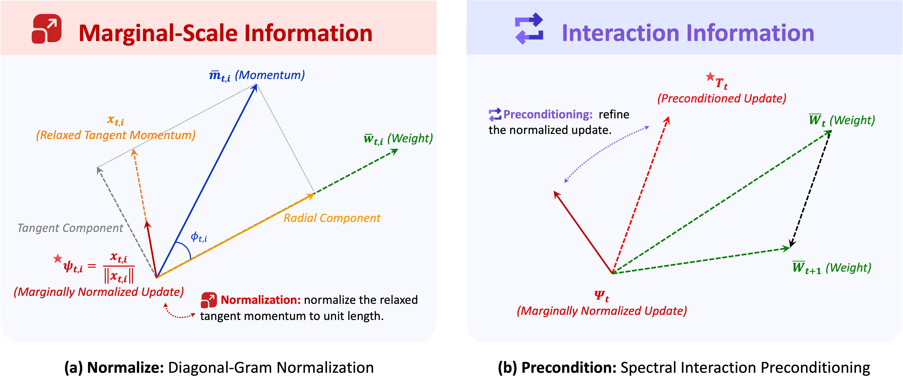
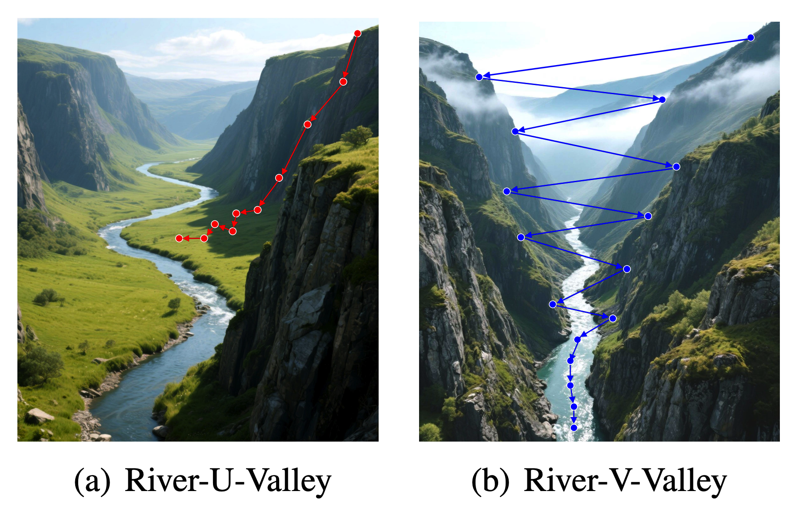
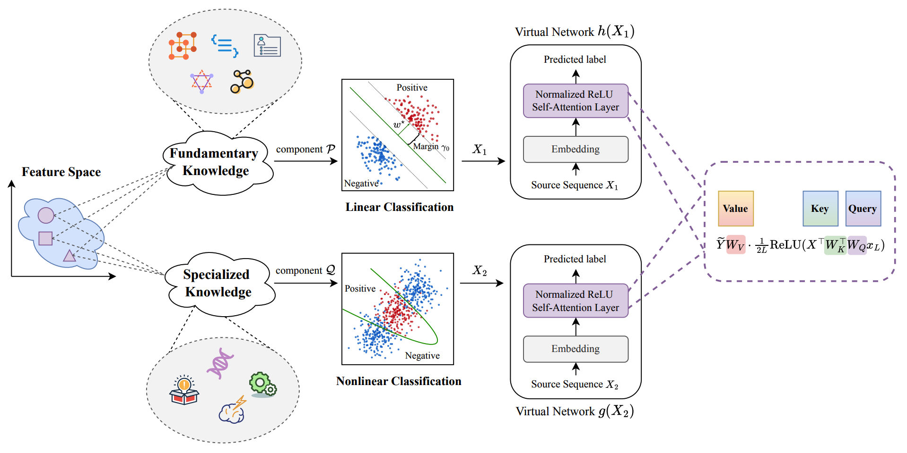
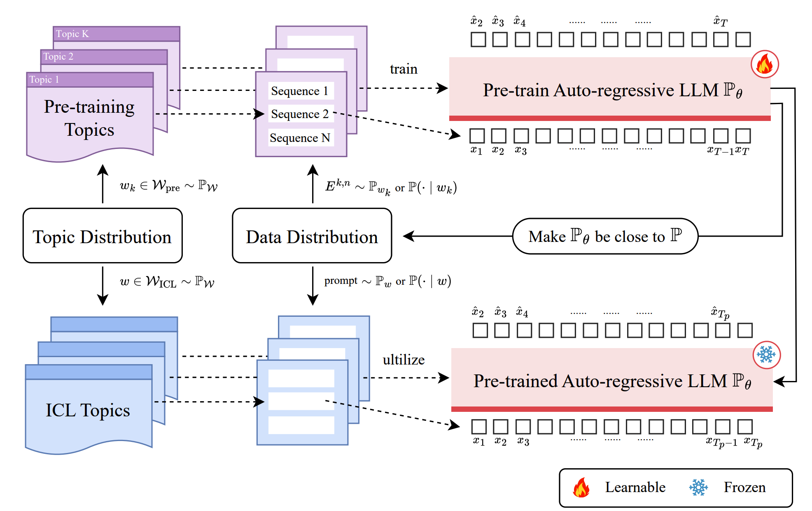
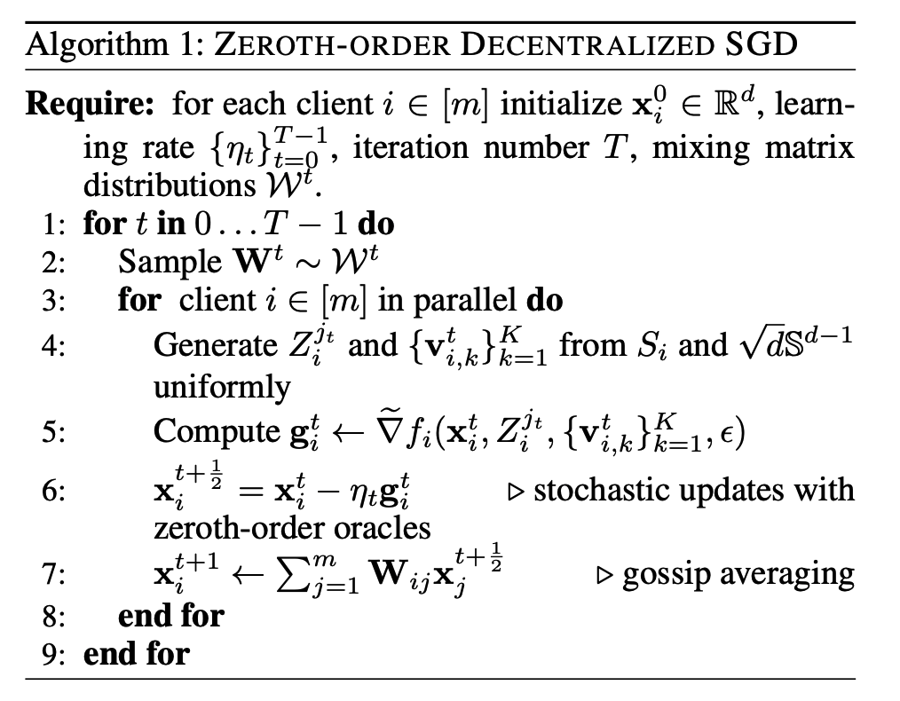
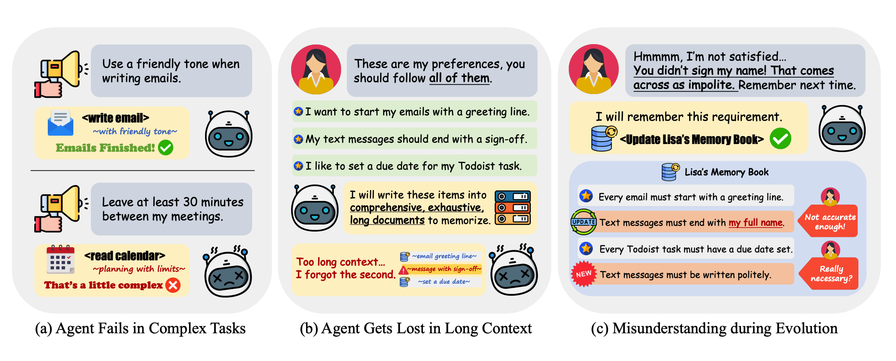
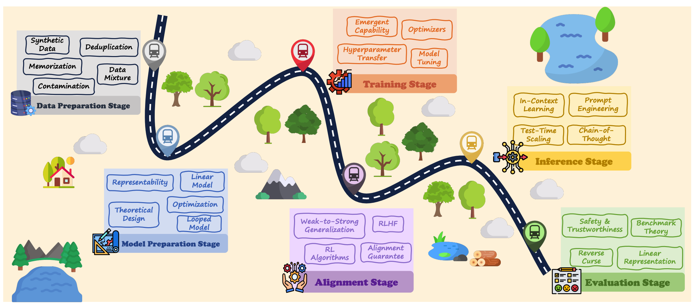
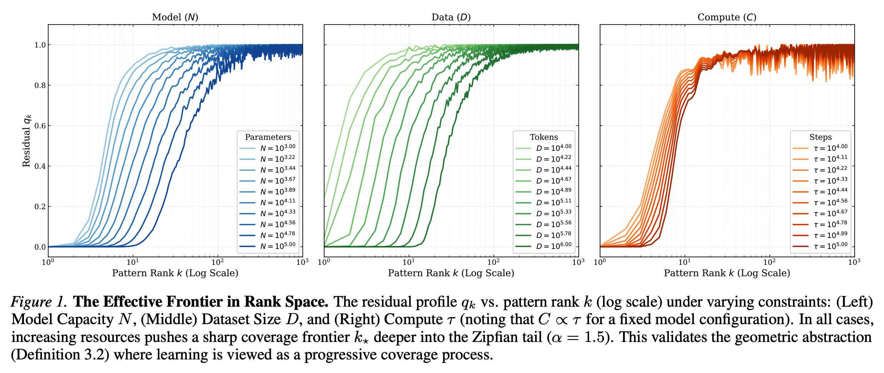
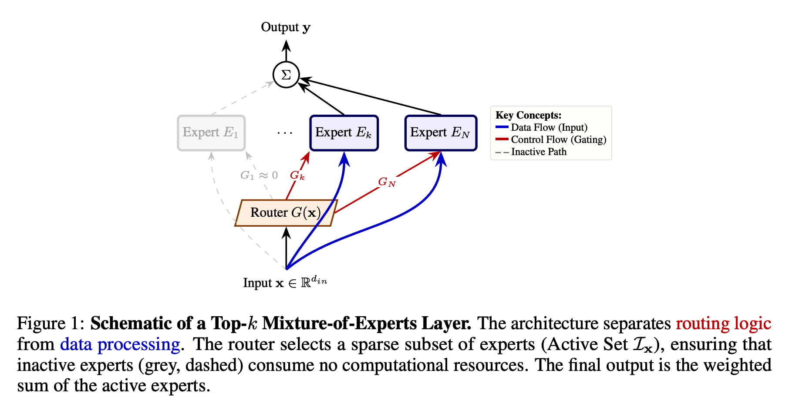

About Me
Hello! I'm Zixuan Gong. I am a third-year Ph.D. student at the Gaoling School of Artificial Intelligence (GSAI), Renmin University of China, advised by Prof. Yong Liu and Prof. Jiaye Teng. My research broadly focuses on LLM theory, driven at its core by a simple curiosity: how do foundation models actually learn, and why do they work so well? My long-term goal is to uncover the fundamental principles governing their behavior. By bridging theory and practice, I hope to translate these insights into the design and development of more principled architectures, training paradigms, and optimization algorithms.
Research
LLM Theory
Understanding the architecture, optimization, and generalization principles behind large language models.
LLM Safety
Studying intrinsic risks and emergent behaviors that affect the reliability of LLMs.
Machine Learning Theory
Exploring the theoretical foundations of machine learning.
Currently, I am interested in the design and development of next-generation optimizers. I am exploring optimization algorithms and paradigms such as Muon and the muP principles, with a clear and simple goal—making large-scale training fundamentally more efficient, stable, and scalable.
Publications

Normalize-Then-Precondition: A Hierarchical Approach to Marginal Scale and Interaction Geometry for LLM Training
Zixuan Gong, Zeyu Gan, Yong Liu, Jiaye Teng
Preprint
@article{gong2026normalize,
title={Normalize-Then-Precondition: A Hierarchical Approach to Marginal Scale and Interaction Geometry for LLM Training},
author={Gong, Zixuan and Gan, Zeyu and Teng, Jiaye and Liu, Yong},
journal={arXiv preprint arXiv:2609.36692},
year={2026}
}

What Makes Looped Transformers Perform Better Than Non-Recursive Ones
Zixuan Gong, Yong Liu, Jiaye Teng
Preprint
@article{gong2025makes,
title={What Makes Looped Transformers Perform Better Than Non-Recursive Ones},
author={Gong, Zixuan and Liu, Yong and Teng, Jiaye},
journal={arXiv preprint arXiv:2510.10089},
year={2025}
}

Disentangling Feature Structure: A Mathematically Provable Two-Stage Training Dynamics in Transformers
Zixuan Gong, Shijia Li, Yong Liu, Jiaye Teng
Preprint
@article{gong2025disentangling,
title={Disentangling feature structure: A mathematically provable two-stage training dynamics in transformers},
author={Gong, Zixuan and Li, Shijia and Liu, Yong and Teng, Jiaye},
journal={arXiv preprint arXiv:2502.20681},
year={2025}
}

Towards Auto-Regressive Next-Token Prediction: In-Context Learning Emerges from Generalization
Zixuan Gong*, Xiaolin Hu*, Huayi Tang, Yong Liu
* Equal contribution
The 13th International Conference on Learning Representations (ICLR 2025)
@inproceedings{
gong2025towards,
title={Towards Auto-Regressive Next-Token Prediction: In-context Learning Emerges from Generalization},
author={Zixuan Gong and Xiaolin Hu and Huayi Tang and Yong Liu},
booktitle={The Thirteenth International Conference on Learning Representations},
year={2025}
}

Stability and Generalization of Zeroth-Order Decentralized Stochastic Gradient Descent with Changing Topology
Xiaolin Hu*, Zixuan Gong*, Gengze Xu, Wei Liu, Jian Luan, Bin Wang, Yong Liu
* Equal contribution
The 39th Annual AAAI Conference on Artificial Intelligence (AAAI 2025)
@inproceedings{hu2025stability,
title={Stability and generalization of zeroth-order decentralized stochastic gradient descent with changing topology},
author={Hu, Xiaolin and Gong, Zixuan and Xu, Gengze and Liu, Wei and Luan, Jian and Wang, Bin and Liu, Yong},
booktitle={Proceedings of the AAAI Conference on Artificial Intelligence},
volume={39},
number={16},
pages={17342--17350},
year={2025}
}

Harness Evolution as Learning: Approximation, Generalization, and Optimization Limits of Self-Improving Personal Agents.
Zeyu Gan, Zixuan Gong, Yong Liu
Preprint
@article{gan2026harness,
title={Harness Evolution as Learning: Approximation, Generalization, and Optimization Limits of Self-Improving Personal Agents},
author={Gan, Zeyu and Gong, Zixuan and Liu, Yong},
journal={arXiv preprint arXiv:2609.36892},
year={2026}
}

Beyond the Black Box: A Survey on the Theory and Mechanism of Large Language Models
Zeyu Gan, Ruifeng Ren, Wei Yao, Xiaolin Hu, Gengze Xu, Chen Qian, Huayi Tang, Zixuan Gong, Xinhao Yao, Pengwei Tang, Zhenxing Dou, Yong Liu
Preprint
@article{gan2026beyond,
title={Beyond the Black Box: Theory and Mechanism of Large Language Models},
author={Gan, Zeyu and Ren, Ruifeng and Yao, Wei and Hu, Xiaolin and Xu, Gengze and Qian, Chen and Tang, Huayi and Gong, Zixuan and Yao, Xinhao and Tang, Pengwei and others},
journal={arXiv preprint arXiv:2601.02907},
year={2026}
}

Effective Frontiers: A Unification of Neural Scaling Laws
Jiaxuan Zou*, Zixuan Gong*, Ye Su, Huayi Tang, Yong Liu
* Equal contribution
Preprint
@article{zou2026effective,
title={Effective Frontiers: A Unification of Neural Scaling Laws},
author={Zou, Jiaxuan and Gong, Zixuan and Su, Ye and Tang, Huayi and Liu, Yong},
journal={arXiv preprint arXiv:2602.02593},
year={2026}
}

Sparsity is Combinatorial Depth: Quantifying MoE Expressivity via Tropical Geometry
Ye Su, Huayi Tang, Zixuan Gong, Yong Liu
Preprint
@article{su2026sparsity,
title={Sparsity is Combinatorial Depth: Quantifying MoE Expressivity via Tropical Geometry},
author={Su, Ye and Tang, Huayi and Gong, Zixuan and Liu, Yong},
journal={arXiv preprint arXiv:2602.03204},
year={2026}
}